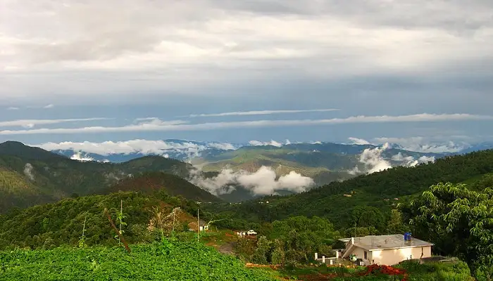
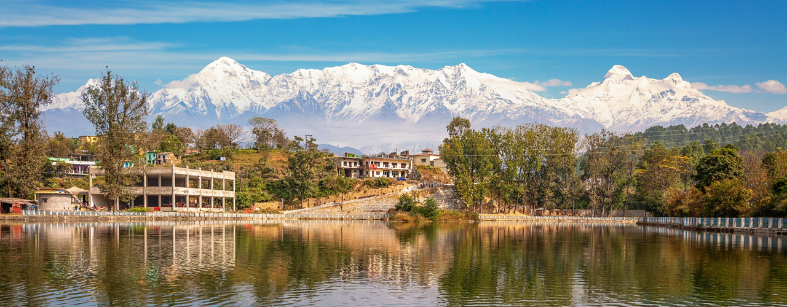
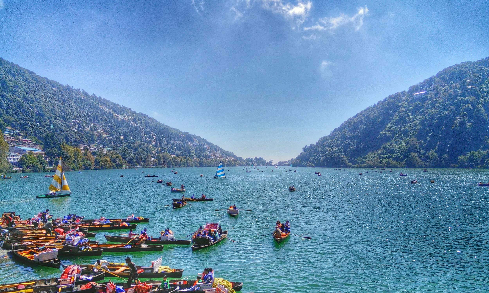
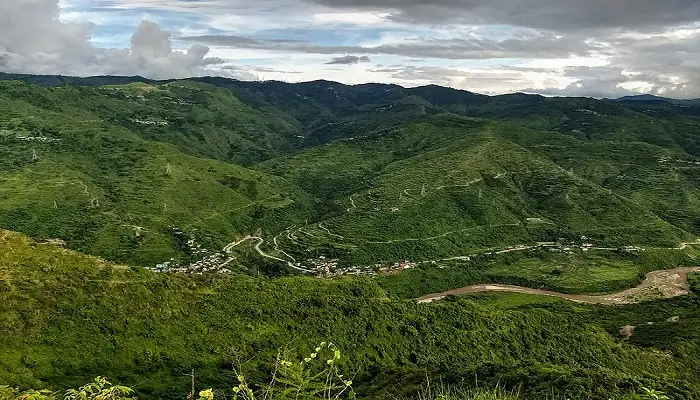
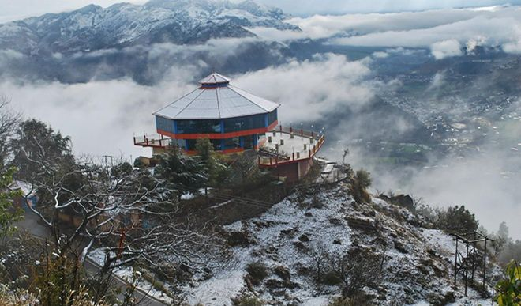

Most Beautifull Places To Visit In Uttarakhand For A Perfect Vacation
Boasting an enchanting view of the Himalayas and a cultural ethos that speaks of simplistic living amidst nature and harmony Uttarakhand is a land of sublime natural beauty. Indulge in the serene spirituality with the list of places to visit in Uttarakhand. From numerous cant-miss experiences that range from water sports to the ashrams where you can connect with your inner self. Uttarakhand has everything in store for any tourist who is daring enough to face the heights of the Himalayas, crazy enough to sail on the snow, and keen enough to explore themselves. With these magnificent places to explore in Uttarakhand, theres no reason you should be a part of the urban grind for more than 2 months at a stretch.
Top Places To Visit In Kumaon
Interested in visiting Kumaon? Here is a list of the best places to visit in Kumaon for a unique experience and a fun-filled vacation amid the snow-capped mountains and serene landscape. Experience heaven as we bring you the best places to visit in this piece of paradise nestled in Northern India. Take a look at the best Kumaon tourist places!
Almora – Famous Offbeat Places
Almora is a stunning hill station surrounded by snow-capped Himalayan peaks of Uttarakhand. Almora is known for its delicious local foods, handicrafts and art, rich cultural history, and wildlife. The Koshi (Kaushaki) and Suyal (Salmali) rivers are the two main rivers in this town. Many devotees visit Jageshwar and Nanda Devi every year. Because Kasar Devi, a village close to Almora, includes hostels and cafes, Almora is also well-liked by travellers. Visitors can enjoy cycling and mountain biking on the mountain trail. You will undoubtedly enjoy yourself here whether you are an outdoor enthusiast or a nature lover.
These places to visit in Almora in Uttarakhand offer you an escape from the heat. The picturesque views of Almora are especially recommended to mountain lovers. The romantic destination allures you with its magnificent beauty. This is one of the best tourist places in Uttarakhand.
Also Read: Places To Visit In Almora
Bageshwar – Uttarakhand’s Kashi
Bageshwar, located in Uttarakhand, invites you to discover its hidden treasures. In addition, there are many places to visit in Bageshwar, where you can experience the peace and natural beauty that weave together the rich cultural legacy of the area. Bageshwar delivers a most rewarding experience for everyone, just a short ride away, whether one is seeking seclusion or longs to gaze around in the lap of Mother Nature at long-forgotten exotic historical locations.
This beautiful small town in Uttarakhand is situated in the Kumaon region of the Himalayan range. What attracts tourists to this place are the temples, rivers, and mountains. The very famous temple Baghnath is dedicated to Lord Shiva and is considered very auspicious by visitors. Well, that is not all. This place has a lot of adventure activities to do as well as plenty of places to visit around Bageshwar. It is one of the best places to visit in Uttarakhand for experience seekers and adventure lovers.
Also Read: Places To Visit In Bageshwar
Nainital – City Of Lakes
Nainital is a charming hill station known for its tranquil lakes and hills. The major attractions are Naina Devi Temple and Snow View Point. While you are visiting Nainital, do not forget to visit Bhimtal, Sattal, and Naukuchiatal. Because each has a distinct charm of its own. The town is a year-round destination due to its beautiful weather; however, March through June is the busiest travel season. Make sure to visit all the offbeat places in Nainital.
Nainital has several options for trekking, rock climbing, and paragliding for those looking for excitement. Naina Peak, which is also Nainital’s highest point, provides an exciting hiking trail. For a chance to see tigers and other wildlife, wildlife fans can explore the about 65-kilometre-distance Jim Corbett National Park or visit the Nainital Zoo, home to various Himalayan species. The villages of Pangot and Sattal, close to Nainital, are a birdwatcher’s paradise.
Also Read: Places To Visit In Nanital
Champawat – A Popular Historical Town
Still looking for popular tourist places in Uttarakhand? Champawat is a quaint town with significant historical and religious significance. Nagnath temple, Baleshwar temple, and Kranteshwar temple are some of the famous ancient temples known for their remarkable architecture. If you are looking for an exciting getaway and spiritual site, this is the place to be.
Also Read: Places To Visit In Champawat
Pithoragarh – Tranquil Hilltown
Pithoragarh, situated amidst the Himalayan range, offers the first stop for pilgrims visiting Kailash Mansarovar. If you love a picturesque place with a calming environment, this little town can be very promising. There are many places to visit in Pithoragarh. If you are interested in mountaineering in Uttarakhand, then surely head to this beautiful place. As River Kali flows around this nature-adorned place, find your path to spirituality here.
Also Read: Places To Visit In PithoraGarh